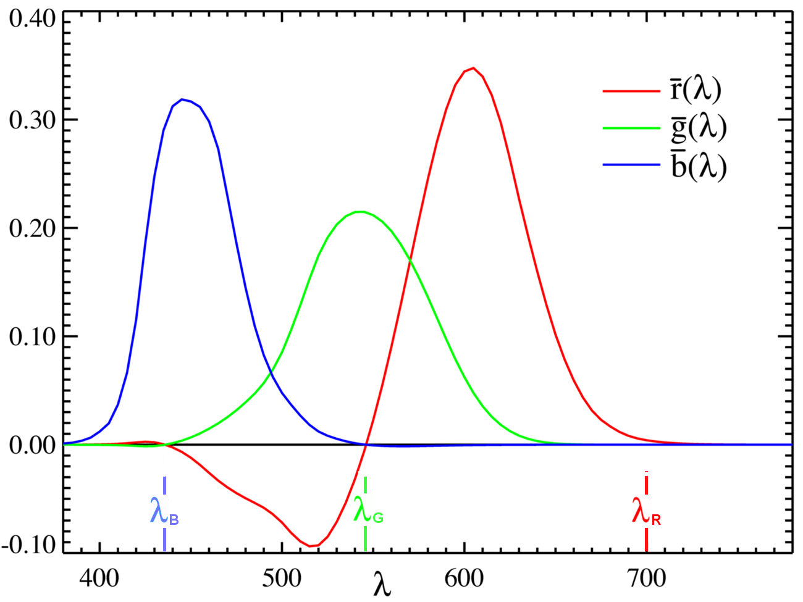
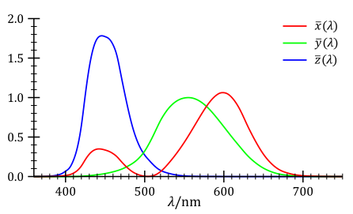

Gamut of the CIE RGB primaries and location of primaries on the CIE 1931 xy chromaticity diagram

The CIE 1931 RGB color-matching functions normalized to equal areas under the curves. Multiplying the red and green curves by 72.0962 and 1.3791 respectively yields the actual color-matching functions. The color-matching functions are proportional to the intensities of primaries needed to match the monochromatic test color at the wavelength shown on the horizontal scale.

The CIE XYZ standard observer color-matching functions
XYZ 颜色匹配函数的积分必须全部相等，根据要求 3，这由根据要求 2 的光视效率函数的积分设置。制表灵敏度曲线在它们中有一定量的任意性。单个 X、Y 和 Z 灵敏度曲线的形状可以 reasonably
准确地测量。然而，整体亮度曲线（实际上是这三个曲线的加权和）是主观的，因为它涉及询问测试人员两个光源是否具有相同的亮度，即使它们是完全不同的颜色。同样，X、Y 和 Z 曲线的相对大小是任意的。此外，可以定义具有两倍振幅的 X
灵敏度曲线的有效颜色空间。这个新颜色空间将具有不同的形状。CIE 1931 和 1964 XYZ 颜色空间中的灵敏度曲线被缩放以具有相等的曲线下面积。
CIE xyY 颜色空间
三维颜色可以分为两部分：亮度和色度。例如，白色颜色是亮颜色，而灰色颜色被认为是相同白色的较暗版本。换句话说，白色和灰色的色度相同，但它们的亮度不同。CIE xyY 颜色空间被故意设计为 Y
参数也是颜色的亮度的度量。色度然后由两个派生参数 x 和 y 指定，从三色刺激值 X、Y 和 Z 导出的三个归一化值中的两个：[14]
\[ x = \frac{X}{X+Y+Z}, \quad y = \frac{Y}{X+Y+Z}, \quad z = \frac{Z}{X+Y+Z} = 1 - x - y \]
也就是说，因为每个三色刺激参数 X、Y、Z 被所有三个的和除，结果值 x、y、z 每个代表整体的比例，因此它们的和必须等于一。因此，值 z 可以通过知道 x 和 y 来推断，因此后两个值足以描述任何颜色的色度。
由 x、y 和 Y 指定的派生颜色空间被称为 CIE xyY 颜色空间，广泛用于实践中指定颜色。
X 和 Z 三色刺激值可以从色度值 x 和 y 以及 Y 三色刺激值计算回来：[15]
\[ X = \frac{Y}{y}x, \quad Z = \frac{Y}{y}(1-x-y) \]
↑ CIE (1932). Commission internationale de l'Eclairage proceedings, 1931.
Cambridge: 剑桥大学出版社.
↑ Smith, Thomas; Guild, John (1931–32). "The C.I.E. colorimetric standards and
their use". Transactions of the Optical Society. 33 (3): 73–134. Bibcode:1931TrOS...33...73S.
doi:10.1088/1475-4878/33/3/301.
↑ a b Wright, William David (1928). "A re-determination of the trichromatic
coefficients of the spectral colors". Transactions of the Optical Society. 30 (4): 141–164.
doi:10.1088/1475-4878/30/4/301.
↑ a b Guild, J. (1932). "The colorimetric properties of the spectrum".
Philosophical Transactions of the Royal Society of London. Series A, Containing Papers of a
Mathematical or Physical Character. 230 (681–693): 149–187. Bibcode:1932RSPTA.230..149G.
doi: 10.1098/rsta.1932.0005. JSTOR 91229. "The trichromatic coefficients for [Wright's] ten
observers agreed so closely with those of the seven observers examined at the National Physical
Laboratory as to indicate that both groups must give results approximating more closely to 'normal'
than might have been expected from the size of either group"
↑ Grassmann, H. (1853). "Zur Theorie der Farbenmischung". Annalen der Physik und
Chemie. 165 (5): 69–84. Bibcode:1853AnP...165...69G. doi:10.1002/andp.18531650505.
↑ a b c MacEvoy, Bruce. "Colorimetry". Handprint. Retrieved 8 February 2025.
↑ a b Fairman, H. S.; Brill, M. H.; Hemmendinger, H. (February 1997). "How the CIE
1931 Color-Matching Functions Were Derived from the Wright–Guild Data". Color Research and
Application. 22 (1): 11–23. doi:10.1002/(SICI)1520-6378(199702)22:1<11::AID-COL4>3.0.CO;2-7.
and Fairman, H. S.; Brill, M. H.; Hemmendinger, H. (August 1998). "Erratum: How the CIE 1931
Color-Matching Functions Were Derived from the Wright–Guild Data". Color Research and Application.
23 (4): 259. doi: 10.1002/(SICI)1520-6378(199808)23:4<259::AID-COL18>3.0.CO;2-7.
↑ CIE (1926). Commission internationale de l'éclairage proceedings, 1924.
Cambridge: 剑桥大学出版社. The 1924 luminous efficiency function seriously underestimates sensitivity at
wavelengths below 460 nm, and has been supplemented with newer and more accurate luminosity curves;
see Luminosity function#Improvements to the standard.
↑ Harris, A. C.; Weatherall, I. L. (September 1990). "Objective evaluation of color
variation in the sand-burrowing beetle Chaerodes trachyscelides White (Coleoptera: Tenebrionidae) by
instrumental determination of CIE LAB values". Journal of the Royal Society of New Zealand. 20 (3).
The Royal Society of New Zealand: 253–259. Bibcode:1990JRSNZ..20..253H. doi:
10.1080/03036758.1990.10416819. Archived from the original on 201...
↑ "- YouTube". YouTube. Archived from the original on 2016-03-17. Retrieved
2015-10-17. Tristimulus Value of Color: Device Independent Color Representation
↑ Hunt, R. W. (1998). Measuring Colour (3rd ed.). England: Fountain Press. ISBN
0-86343-387-1. . See pgs. 39–46 for the basis in the physiology of the 人眼of tripartite color models,
and 54–7 for chromaticity coordinates.
↑ "Ragnar Granit - Sensory Structure of Retina and Vision". www.japi.org.
↑ Schanda, János, ed. (2007-07-27). Colorimetry. p. 305.
doi:10.1002/9780470175637. ISBN 9780470175637.
↑ Poynton, Charles (2012). Digital Video and HD - Algorithms and Interfaces (2
ed.). p. 275. "Eq 25.1"
↑ Poynton, Charles (2012). Digital Video and HD - Algorithms and Interfaces (2
ed.). p. 275. "Eq 25.2"
↑ "Understand color science to maximize success with LEDs – part 2 – LEDs
Magazine, Issue 7/2012". 18 July 2012. Archived from the original on 2017-11-11.
↑ a b c d "CMF introduction". Colour & Vision Research Laboratory. Institute of
Ophthalmology, University College London. Archived from the original on Nov 19, 2023.
↑ Stiles, W. S.; Birch, J. M. (1959). "N.P.L. Colour-matching Investigation: Final
Report (1958)". Optica Acta. 6 (1): 1–26. Bibcode:1959AcOpt...6....1S. doi:10.1080/713826267.
↑ Speranskaya, N. I. (1959). "Determination of spectrum color co-ordinates for
twenty seven normal observers". Optics and Spectroscopy. 7: 424–428.
↑ Colorimetry — Part 1: CIE standard colorimetric observers. ISO. 2019.
↑ a b Wyman, Chris; Sloan, Peter-Pike; Shirley, Peter (July 12, 2013). "Simple
Analytic Approximations to the CIE XYZ Color Matching Functions". Journal of Computer Graphics
Techniques. 2 (2): 1–11. ISSN 2331-7418.
↑ Stockman, Andrew (December 2019). "Cone fundamentals and CIE standards" (PDF).
Current Opinion in Behavioral Sciences. 30: 87–93. doi:10.1016/j.cobeha.2019.06.005. Retrieved 27
October 2023.
↑ Vos, J.J. (Sep 1978). "Colorimetric and photometric properties of a 2°
fundamental observer". Color Research & Application. 3 (3): 104–156. doi:10.1002/col.5080030309.
↑ "XYZ Tristimulus Value (CIE 1931) / Tristimulus Value (CIE 1964) - Part IV -
Precise Color Communication". KONICA MINOLTA. Archived from the original on Nov 19, 2023.
↑ Stiles, WS; Burch, JM (1959). "NPL colour-matching investigation: final report".
Optica Acta. 6 (1). Bibcode:1959AcOpt...6....1S. doi:10.1080/713826267.
↑ a b CIE 170-2:2015: Fundamental Chromaticity Diagram with Physiological Axes –
Part 2: Spectral Luminous Efficiency Functions and Chromaticity Diagrams. CIE. ISBN
978-3-902842-05-3. Archived from the original on Nov 19, 2023.
↑ "CIE functions". Colour & Vision Research Laboratory. Institute of
Ophthalmology, University College London. Archived from the original on Nov 19, 2023.
↑ "Resolving Display Color Matching Issue" (PDF). KONICA MINOLTA.
延伸阅读
Broadbent, Arthur D. (August 2004). "A critical review of the development of the CIE1931 RGB
color-matching functions". Color Research & Application. 29 (4): 267–272. doi:10.1002/col.20020.
"This article describes the development of the CIE1931 chromaticity coordinates and color-matching
functions starting from the initial experimental data of W. D. Wright and J. Guild. Sufficient
information is given to allow the reader to reproduce and verify the results obtained at each stage
of the calculations and to analyze critically the procedures used. Unfortunately, some of the
information required for the coordinate transformations was never published and the appended tables
provide likely versions of that missing data."
Trezona, Pat W. (2001). "Derivation of the 1964 CIE 10° XYZ Colour-Matching Functions and Their
Applicability in Photometry". Color Research and Application. 26 (1): 67–75.
doi:10.1002/1520-6378(200102)26:1<67::AID-COL7>3.0.CO;2-4.
Wright, William David (2007). "Golden Jubilee of Colour in the CIE—The Historical and Experimental
Background to the 1931 CIE System of Colorimetry". In Schanda, János (ed.). Colorimetry. Wiley
Interscience. pp. 9–24. doi:10.1002/9780470175637.ch2. ISBN 978-0-470-04904-4. (originally published
by the Society of Dyers and Colourists, Bradford, 1981.)
外部链接
Introduction to Colour Science, William Andrew Steer.
efg's Color Chromaticity Diagrams Lab Report and Delphi source
CIE Color Space, Gernot Hoffmann
Annotated downloadable data tables, Andrew Stockman and Lindsay T. Sharpe.
Calculation from the original experimental data of the CIE 1931 RGB standard observer spectral
chromaticity co-ordinates and color matching functions
Colorlab MATLAB toolbox for color science computation and accurate color reproduction (by Jesus Malo
and Maria Jose Luque, Universitat de Valencia). It includes CIE standard tristimulus colorimetry and
transformations to a number of non-linear color appearance models (CIE Lab, CIE CAM, etc.).
Precise color communication Archived 2021-04-23 at the Wayback Machine A Look at the Past and Future
of LED Binning